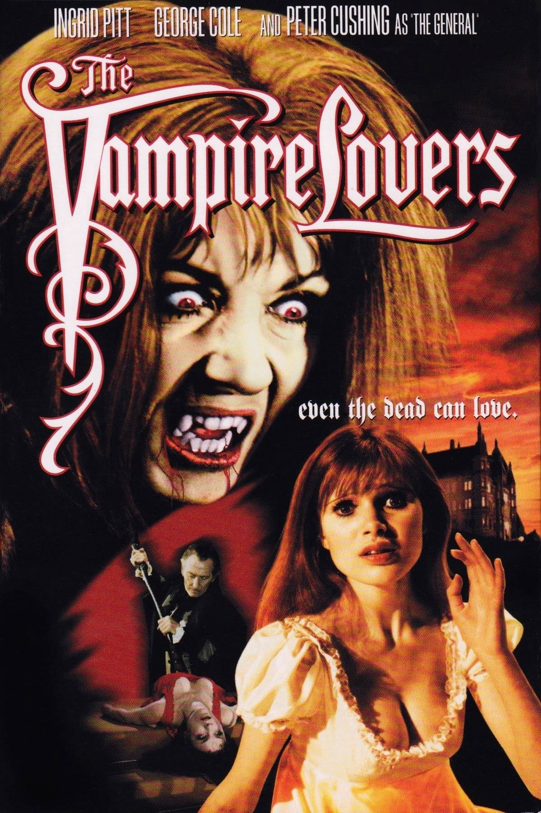
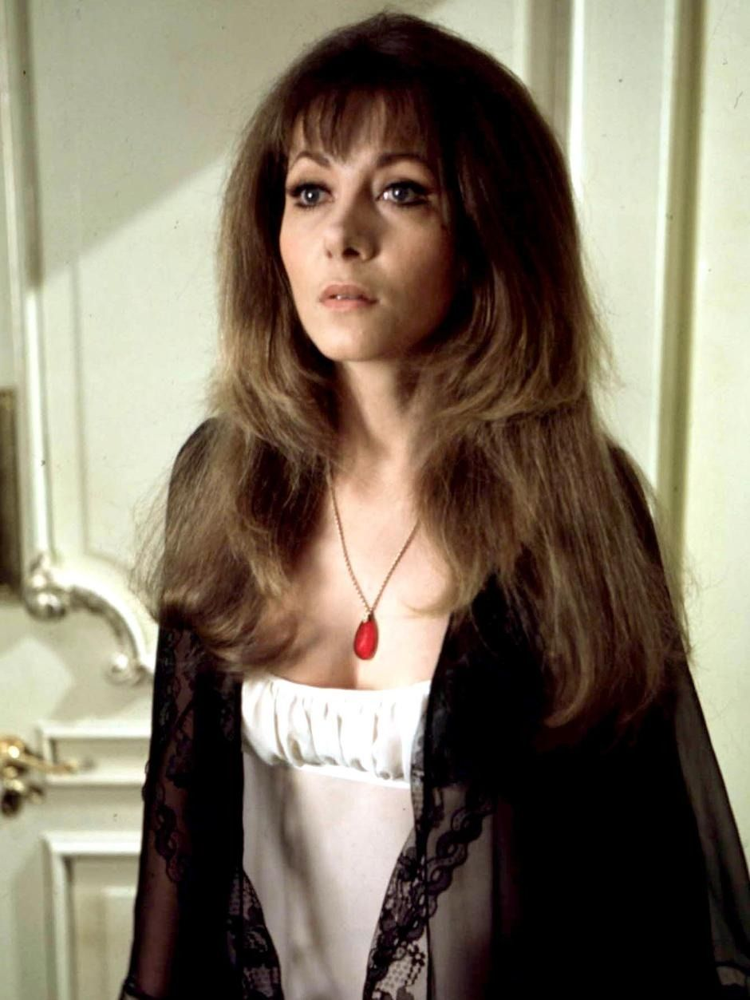
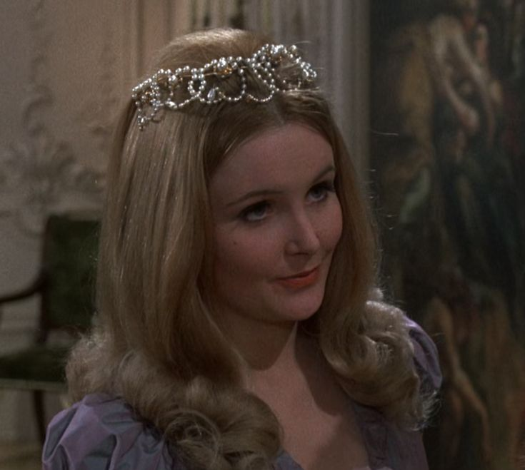
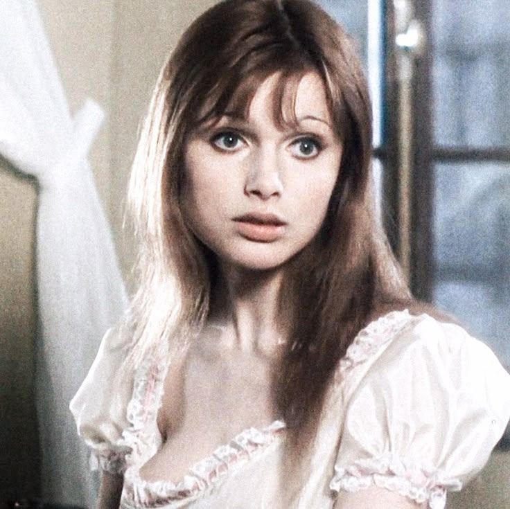

The Vampire Lovers (1970) é um filme de terror gótico coproduzido pela Hammer Film Productions e pela American International Pictures, sob a direção de Roy Ward Baker. Baseado na novela Carmilla (1872), de Sheridan Le Fanu, o longa é estrelado por Ingrid Pitt e Peter Cushing, e marca o início da "Trilogia Karnstein" (seguido por Lust for a Vampire e Twins of Evil, ambos de 1971). A obra destacou-se por sua ousadia para a época ao retratar temas lésbicos de forma explícita.
Em 1794, na Estíria, o caçador de vampiros Barão Hartog decapita uma vampira que havia matado sua irmã, mas falha em encontrar o túmulo de Mircalla Karnstein, a última sobrevivente de uma linhagem nobre de mortos-vivos. Decadas depois, a vampira reaparece usando o nome "Marcilla" e se hospeda na casa do General Spielsdorf sob o pretexto de uma emergência familiar. Ela seduz e mata a jovem Laura, sobrinha do general, drenando sua energia até a morte.
Assumindo a identidade de "Carmilla", a vampira repete o golpe com o rico Sr. Morton para se aproximar de sua filha, Emma. Carmilla seduz a jovem e a governanta, Mademoiselle Perrodot, além de espalhar o pânico na vila ao drenar moradores locais. Quando os protetores de Emma tentam salvá-la com alho e crucifixos, Carmilla mata o médico da família e subjuga o mordomo para remover as proteções mágicas.
O General Spielsdorf, em busca de vingança, alia-se ao Barão Hartog, ao Sr. Morton e ao jovem Carl. Diante do retrato de Mircalla Karnstein no castelo em ruínas da família, eles descobrem que Marcilla e Carmilla são a mesma pessoa. Carl corre para a mansão e impede que Carmilla fuja com Emma, usando um punhal em forma de cruz para espantá-la.
Carmilla se desmaterializa e foge para o Castelo de Karnstein, onde os caçadores já a aguardam. Ao ser encontrada em seu caixão, o General Spielsdorf crava uma estaca em seu coração e a decapita, libertando Emma de sua maldição e vingando a morte da filha. Enquanto o retrato da vampira se transforma em um esqueleto, um misterioso homem de preto observa o fim dos Karnstein à distância.

Marcilla / Carmilla / Mircalla (Ingrid Pitt): A sedutora vampira da família Karnstein que assume diferentes identidades (como Marcilla e Mircalla) para se infiltrar em famílias nobres e atacar jovens.

Laura (Pippa Steel): Uma das jovens da aristocracia que fica fascinada e se torna presa de Carmilla.

Emma Morton (Madeline Smith): Outra jovem inocente que é seduzida e alvo da vampira.